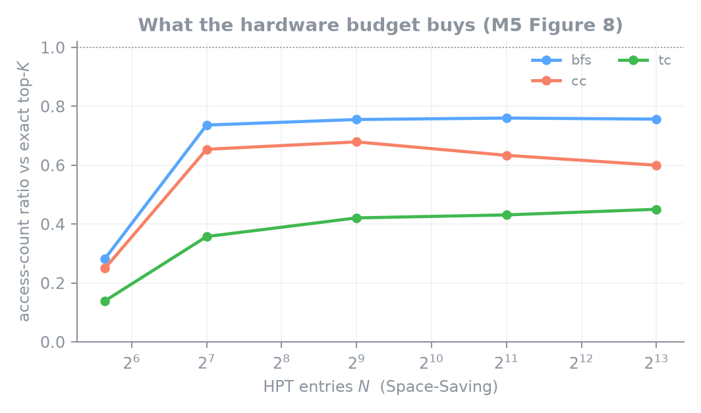
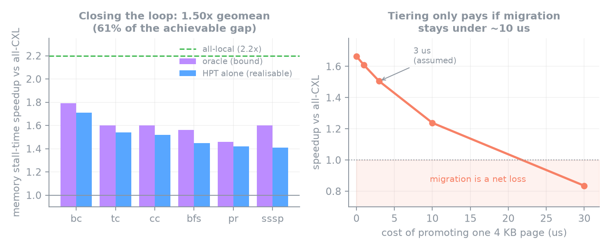
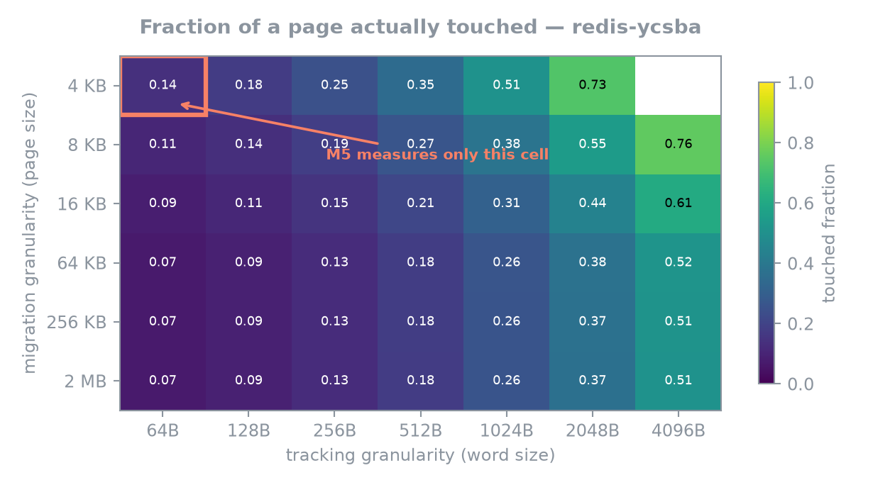

Cache-line hot skewness for CXL memory tiering
Reproducing M5 (ASPLOS ’25) Figure 4 with a purpose-built Intel Pin tool — then finding that the headline disagreements are dominated by a parameter the paper never states.
read(2) vs memcpy1The measurement
M5 argues CXL tiering should track sub-page hotness: within a 4 KB page, only a few 64 B lines are hot. Figure 4 is the distribution of how many distinct 64 B words each page touches. Reproducing it needs a tool that records which words are touched — not just cache hits and misses.


2Calibration first
No result is trustworthy until the instrument is. The tool was run against access patterns whose answer is known analytically, across four orders of granularity — it lands within 0.02% at every point.

3Reproduction scorecard
Scored as maximum error across all five N, not at one convenient point. At N=48 alone most workloads agree — but that is where the CDF has nearly saturated and is the cheapest place to agree.
| Workload | Max error | Verdict |
|---|---|---|
| PageRank | 0.014 | reproduced |
| Triangle counting | 0.030 | reproduced |
| Connected components | 0.082 | close |
| Redis (YCSB-A) | 0.085 | close |
| BFS | 0.095 | close |
| SSSP | 0.433 | disagrees |
| Betweenness | 0.493 | disagrees |
| liblinear | 0.577 | disagrees |
4The kernel blind spot
Pin instruments user-space instructions. When the kernel moves data on the program's behalf, Pin sees nothing — and for these benchmarks that is most of the traffic.
512 MiB via
read(2): 5 DRAM accesses observed.
The same 512 MiB viamemcpy: 24,838,154.
Routing the graph load through user space moves BFS's P(≤48) from 0.813 → 0.320, against M5's published 0.345. That single effect accounts for 26.7 of the 28.6 words/page difference.
5Full-system simulation
The natural test: run the same counters where the blind spot cannot exist. CXLRAMSim is unreleased, so the probe was ported to SimCXL / CXL-DMSim (gem5 23.1) — physical addresses, kernel traffic included, counting code unchanged.
| Workload | Pin vs M5 | gem5 vs M5 | Δ |
|---|---|---|---|
| SSSP | 0.433 | 0.391 | -0.043 |
| Betweenness | 0.493 | 0.331 | -0.163 |
Both moved toward M5 — the hypothesis is real. Neither reached agreement — it is not sufficient.
6What actually dominates
The residual sat entirely at small N, the signature of the measurement window. Re-running the identical workload with one window instead of 46 — same run, same 451441535 DRAM accesses:
| N | M5 | Pin | gem5 46×10M | gem5 1 window |
|---|---|---|---|---|
| 4 | 0.005 | 0.160 | 0.109 | 0.002 |
| 8 | 0.020 | 0.260 | 0.142 | 0.004 |
| 16 | 0.040 | 0.418 | 0.192 | 0.005 |
| 32 | 0.090 | 0.576 | 0.310 | 0.006 |
| 48 | 0.145 | 0.638 | 0.476 | 0.008 |

Mean words/page moves from 46.851 / 64 to 63.603 / 64. M5's published curve sits between our two windows at every single N. We do not match M5 by choosing better — we bracket it. Window choice moves the answer further than the instrument does, and the paper never states which window it used.
7Beyond reproduction



8Tested and refuted
Kept visible because they are results, not gaps.
- Directed graphs explain the bc/sssp gap — no, made it worse
- A larger graph (kron-25) closes it — no
- Real
web-Googleis usable — no, 125× below M5's footprint - One window fits all workloads — no, the best window varies 1×–8×
- A fixed time window explains the spread — no (Spearman 0.086)
- HWT compensates for a weak HPT — no, it is gated on HPT membership
9Reproducing this
make reproduce # build, validate, fetch, profile, analyse, check
make determinism # demonstrate reproducibility rather than assert it
./experiments/check_claims.shEvery headline number lives in claims.md with the command
that regenerates it, and check_claims.sh re-derives them from
results/ so documentation drift is caught rather than discovered by a reader.